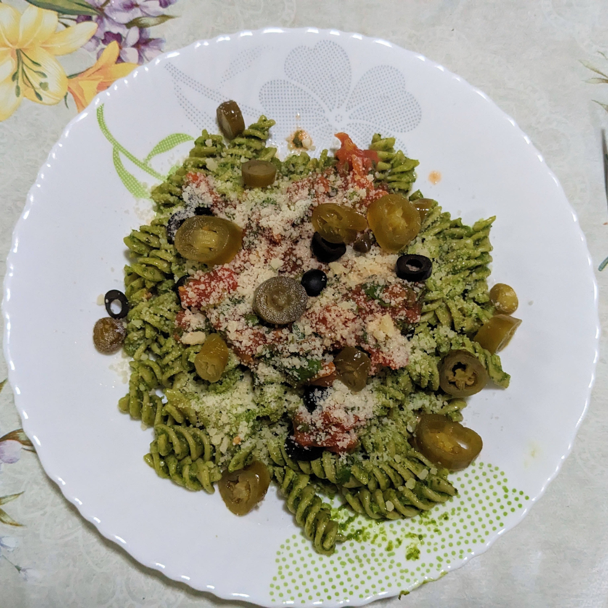
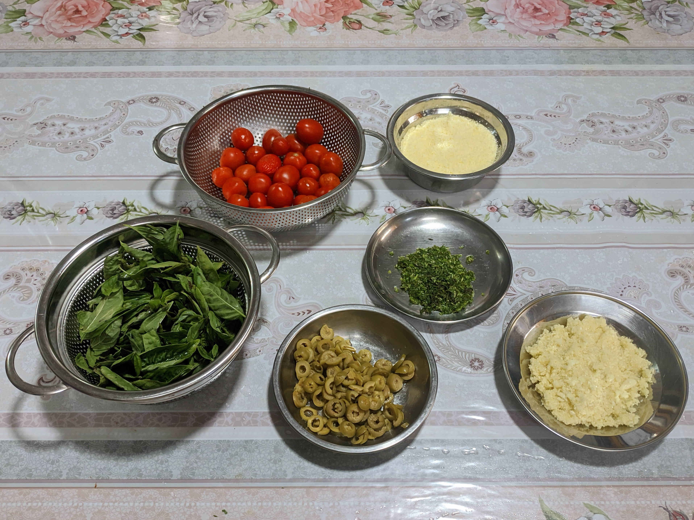

Pesto Pasta

Ingredients
- Durum wheat fusilli (or pasta of choice)
- Parmesan cheese (Vegetarian alternative: Quattrocento cheese)
- Fresh Mozzarella (optional)
- Green (or black) olives
- Tomatoes
- Extra virgin olive oil
- Salt
- Cashew nuts
- Basil leaves
- Lemon
- Coriander leaves
- Thyme leaves
- Parsley leaves
- Garlic
- Jalapenos (optional)
Quantity guide

Procedure
Pesto Sauce
- Roast around 300g cashew nuts and leave to cool down.
- Wash Basil leaves.
- Peel one clove of garlic.
- Cut one quarter of a lemon and discard peel.
- Cut 75g of parmesan.
- Add all of the above to a mixer grinder.
- Add oil and salt to mixer grinder.
- Crush everything. Pesto sauce is ready!
Tomato sauce
- Add tomatoes to boiling water.
- Remove after 1 minute and immediately immerse in cold water.
- Peel tomatoes and crush by hand.
- Add olive oil to cooking pot and heat oil.
- Add thyme leaves to oil.
- Add tomatoes to cooking pot.
- Add salt.
- Cover and leave to cook till tomato sauce thickens.
- Finely cut coriander and parsley leaves.
- Turn off flame and add coriander and parsley leaves. Tomato sauce is ready!
Pasta
- Finely chop garlic cloves.
- Dice olives.
- Crush 75g parmesan into powder using the mixer grinder.
- Add fusilli (or pasta of choice) to boiling water.
- Add salt.
- Boil pasta for at least 15 mins or until cooked.
- Drain water.
- Add oil to wok and fry garlic.
- Add fusilli and pesto sauce to wok.
- Stir fry for a few minutes.
- Serve hot on plate.
- Add tomato sauce to plate.
- Garnish with diced olives, diced jalapenos and crushed parmesan.
- Enjoy your homemade pesto pasta!